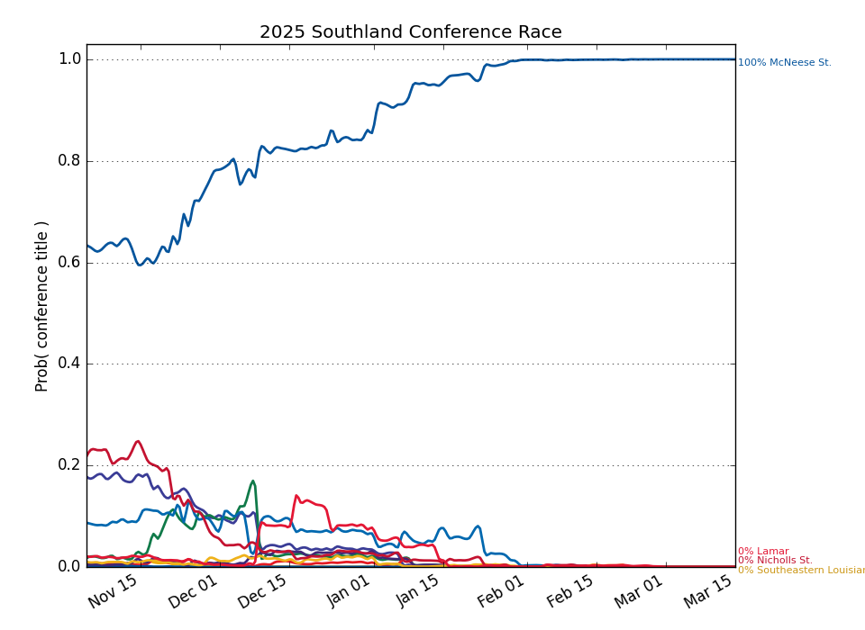

This Week's Games
| Date | Away | W Prob, Pred Score | Home | |||
|---|---|---|---|---|---|---|
| Nov. 28 | Southeastern Louisiana | 65.8% | 74 | 70 | 34.2% | Gardner Webb |
| Nov. 28 | Nicholls St. | 26.4% | 72 | 79 | 73.6% | Tulane |
| Nov. 28 | Tex A&M Corpus Chris | 8.9% | 62 | 79 | 91.1% | Xavier |
| Nov. 29 | Houston Baptist | 27.9% | 68 | 75 | 72.1% | Georgia Southern |
| Nov. 29 | Southeastern Louisiana | 24.3% | 64 | 72 | 75.7% | Navy |
| Nov. 29 | Southern | 46.6% | 72 | 73 | 53.4% | Northwestern St. |
| Nov. 29 | Stephen F. Austin | 40.6% | 69 | 72 | 59.4% | UT Arlington |
| Dec. 01 | McNeese St. | 76.9% | 76 | 69 | 23.1% | Incarnate Word |
| Dec. 02 | Nicholls St. | 4.7% | 61 | 82 | 95.3% | Creighton |
| Dec. 02 | Houston Baptist | 14.0% | 56 | 67 | 86.0% | North Texas |
| Dec. 03 | Louisiana Lafayette | 11.4% | 57 | 71 | 88.6% | Lamar |
| Dec. 03 | New Orleans | 13.7% | 68 | 82 | 86.3% | Memphis |
| Dec. 03 | UT Rio Grande Valley | 28.3% | 71 | 78 | 71.7% | Stephen F. Austin |